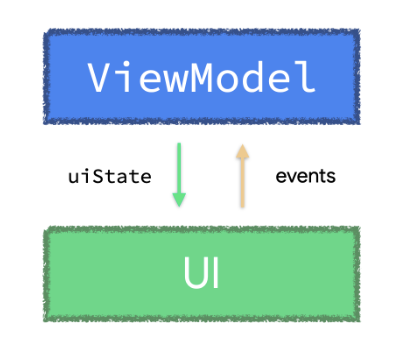

ViewModel One-off event antipatterns
You should handle ViewModel events immediately, causing a UI state update.
ViewModel events are actions originated from the ViewModel that the UI should perform. For example, displaying an informative message to the user, or navigating to a different screen when the application state changes.
Our guidance on ViewModel events is opinionated in two different ways:
-
Whenever a one-off event originates in the ViewModel, the ViewModel should handle that event immediately causing a state update. The ViewModel should only expose application state. Exposing events that haven’t been reduced to state from a ViewModel means the ViewModel is not the source of truth for the state derived from those events; Unidirectional Data Flow (UDF) describes the advantages of sending events only to consumers that outlive their producers.
-
State should be exposed using an observable data holder type.
 Following UDF, state flows down from the ViewModel to the UI, and events go up from the UI to the ViewModel
In your app, you might be exposing ViewModel events to the UI using Kotlin Channels or other reactive streams such as SharedFlow, or maybe this is a pattern you’ve seen in other projects. When the producer (the ViewModel) outlives the consumer (UI—Compose or Views), which can be the case with ViewModel events, these APIs don’t guarantee the delivery and processing of those events. This can result in bugs and future problems for the developer, and it’s also an unacceptable user experience for most apps.
You should handle ViewModel events immediately, causing a UI state update. Trying to expose events as an object using other reactive solutions such as Channel or SharedFlow doesn’t guarantee the delivery and processing of the events.
Case Study
Here’s an example of the implementation of a ViewModel in an app’s typical payments flow. In the following code snippets, the MakePaymentViewModel directly tells the UI to navigate to the payment result screen when the result of the payment request comes back. We’ll use this example to explore why handling one-off ViewModel events like this brings problems and higher engineering costs.
class MakePaymentViewModel(...) : ViewModel() {
val uiState: StateFlow<MakePaymentUiState> = /* ... */
// ⚠️⚠️ DO NOT DO THIS!! ⚠️⚠️
// This one-off ViewModel event hasn't been handled nor reduced to state
// Boolean represents whether or not the payment was successful
private val _navigateToPaymentResultScreen = Channel<Boolean>()
// `receiveAsFlow` makes sure only one collector will process each
// navigation event to avoid multiple back stack entries
val navigateToPaymentResultScreen = _navigateToPaymentResultScreen.receiveAsFlow()
// Protecting makePayment from concurrent callers
// If a payment is in progress, don't trigger it again
private var makePaymentJob: Job? = null
fun makePayment() {
if (makePaymentJob != null) return
makePaymentJob = viewModelScope.launch {
try {
_uiState.update { it.copy(isLoading = true) } // Show loading spinner
val isPaymentSuccessful = paymentsRepository.makePayment(...)
_navigateToPaymentResultScreen.send(isPaymentSuccessful)
} catch (ioe: IOException) { ... }
finally { makePaymentJob = null }
}
}
}
The UI would then consume this event and navigate accordingly:
//////////////////////////////////////////////
// Jetpack Compose code
//////////////////////////////////////////////
@Composable
fun MakePaymentScreen(
onPaymentMade: (Boolean) -> Unit,
viewModel: MakePaymentViewModel = viewModel()
) {
val currentOnPaymentMade by rememberUpdatedState(onPaymentMade)
val lifecycle = LocalLifecycleOwner.current.lifecycle
// Check whenever navigateToPaymentResultScreen emits a new value
// to tell the caller composable the payment was made
LaunchedEffect(viewModel, lifecycle) {
lifecycle.repeatOnLifecycle(state = STARTED) {
viewModel.navigateToPaymentResultScreen.collect { isPaymentSuccessful ->
currentOnPaymentMade(isPaymentSuccessful)
}
}
}
// Rest of the UI for the login screen.
}
//////////////////////////////////////////////
// Activity / Views code
//////////////////////////////////////////////
class MakePaymentActivity : AppCompatActivity() {
private val viewModel: MakePaymentViewModel by viewModels()
override fun onCreate(savedInstanceState: Bundle?) {
/* ... */
lifecycleScope.launch {
repeatOnLifecycle(Lifecycle.State.STARTED) {
viewModel.navigateToPaymentResultScreen.collect { isPaymentSuccessful ->
val intent = Intent(this, PaymentResultActivity::class.java)
intent.putExtra("PAYMENT_RESULT", isPaymentSuccessful)
startActivity(intent)
finish()
}
}
}
}
}
The navigateToPaymentResultScreen implementation seen above has multiple design flaws.
Antipattern #1: State about payment completion can be lost
A Channel doesn’t guarantee the delivery and processing of the events. Therefore, events can be lost, leaving the UI in an inconsistent state. An example of this could happen when the UI (consumer) goes to the background and stops the Channel collection just after the ViewModel (producer) sends an event. The same can be said for other APIs that aren’t an observable data holder type such as SharedFlow, which could emit events even if there are no consumers listening to them.
This is an antipattern because the payment result state modeled in the UI layer isn’t durable or atomic if we think about it in terms of an ACID transaction. The payment may have succeeded as far as the repository is concerned, but we never moved to the proper next screen.
Note: This antipattern could be mitigated by using Dispatchers.Main.immediate when sending and receiving events. However, if that’s not enforced by a lint check, this solution could be error-prone as devs could easily forget it.
Antipattern #2: Telling the UI to take an action
For an app that supports multiple screen sizes, the UI action to perform given a ViewModel event might be different depending on the screen size. For example, the case study app should navigate to the payment result screen when running on a mobile phone; but if the app is running on a tablet, the action could show the result in a different part of the same screen.
The ViewModel should tell the UI what the app state is and the UI should determine how to reflect that. The ViewModel shouldn’t tell the UI which actions it should take.
Antipattern #3: Not handling the one-off event immediately
Modeling the event as something that is fire and forget—in flight—is what leads to problems. It’s harder to comply with ACID properties, so the highest possible data reliability and integrity cannot be ensured. State is, events happen. The longer an event isn’t handled, the harder the problem becomes. For ViewModel events, process the event as soon as possible and generate a new UI state from it.
In the case study, we created an object for the event—represented as a Boolean—and exposed it using a Channel:
// Create Channel with the event modeled as a Boolean
val _navigateToPaymentResultScreen = Channel<Boolean>()
// Trigger event
_navigateToPaymentResultScreen.send(isPaymentSuccessful)
Once you do this, you’ve taken responsibility for ensuring things like exactly-once delivery and handling. If you must model an event as an object for some reason, limit its lifespan to be as short as possible so that it doesn’t have a chance to get lost.
Handling a one-off event in the ViewModel usually comes down to a method call — for example, updating the UI state. Once you call that method, you know whether it completed successfully or threw an exception, and you know that it happened exactly once.
Case Study Improvements
If you’re in one of these situations, reconsider what that one-off ViewModel event actually means for your UI. Handle them immediately and reduce them to UI state which is exposed using an observable data holder such as StateFlow or mutableStateOf.
UI state better represents the UI at a given point in time, it gives you more delivery and processing guarantees, it’s usually easier to test, and it integrates consistently with the rest of your app.
If you struggle to find a way to reduce one-off ViewModel events to state, reconsider what that event actually means for your UI.
In the example above, the ViewModel should expose what’s the actual application data — the payment data in this case — instead of telling the UI the action to take. The following is a better representation of that ViewModel event handled and reduced to state, and exposed using an observable data holder type.
data class MakePaymentUiState(
val paymentInformation: PaymentModel,
val isLoading: Boolean = false,
// PaymentResult models the application state of this particular payment attempt,
// `null` represents the payment hasn't been made yet.
val paymentResult: PaymentResult? = null
)
class MakePaymentViewModel(...) : ViewModel() {
private val _uiState = MutableStateFlow<MakePaymentUiState>(...)
val uiState: StateFlow<MakePaymentUiState> = _uiState.asStateFlow()
// Protecting makePayment from concurrent callers
// If a payment is in progress, don't trigger it again
private var makePaymentJob: Job? = null
fun makePayment() {
if (makePaymentJob != null) return
makePaymentJob = viewModelScope.launch {
try {
_uiState.update { it.copy(isLoading = true) }
val isPaymentSuccessful = paymentsRepository.makePayment(...)
// The event of what to do when the payment response comes back
// is immediately handled here. It causes a UI state update.
_uiState.update {
it.copy(
isLoading = false,
paymentResult = PaymentResult(it.paymentInfo, isPaymentSuccessful)
)
}
} catch (ioe: IOException) { ... }
finally { makePaymentJob = null }
}
}
}
In the code above, the event is handled immediately by calling _uiState.update (#L27) with the new paymentResult data (#L30); there’s no way for this event to get lost now. The event has been reduced to state, and the paymentResult field in MakePaymentUiState reflects the payment result application data.
With this, the UI would react to paymentResult changes and act accordingly:
//////////////////////////////////////////////
// Jetpack Compose code
//////////////////////////////////////////////
@Composable
fun MakePaymentScreen(
onPaymentMade: (PaymentModel, Boolean) -> Unit,
viewModel: MakePaymentViewModel = viewModel()
) {
val uiState by viewModel.uiState.collectAsState()
uiState.paymentResult?.let {
val currentOnPaymentMade by rememberUpdatedState(onPaymentMade)
LaunchedEffect(uiState) {
// Tell the caller composable that the payment was made.
// the parent composable will act accordingly.
currentOnPaymentMade(
uiState.paymentResult.paymentModel,
uiState.paymentResult.isPaymentSuccessful
)
}
}
// Rest of the UI for the login screen.
}
//////////////////////////////////////////////
// Activity / Views code
//////////////////////////////////////////////
class MakePaymentActivity : AppCompatActivity() {
private val viewModel: MakePaymentViewModel by viewModels()
override fun onCreate(savedInstanceState: Bundle?) {
/* ... */
lifecycleScope.launch {
repeatOnLifecycle(Lifecycle.State.STARTED) {
viewModel.uiState.collect { uiState ->
if (uiState.paymentResult != null) {
val intent = Intent(this, PaymentResultActivity::class.java)
intent.putExtra(
"PAYMENT_RESULT",
uiState.paymentResult.isPaymentSuccessful
)
startActivity(intent)
finish()
}
}
}
}
}
}
Note: If in your use case the Activity doesn’t finish() and is kept in the backstack, your ViewModel would need to expose a function to clear the paymentResult from the UiState (i.e. setting the field to null) that will be called after the Activity starts the other one. An example of this can be found in the Consuming events can trigger state updates section of the docs.
As mentioned in the UI layer’s additional considerations section, you can expose the UI state of your screen with multiple streams if that’s what your use case requires. What’s important is that those streams are observable data holder types. In the example above, a unique UI state stream is exposed because the isLoading flag and the paymentResult property are highly intertwined. Separating them out could cause inconsistencies in the UI—for example, if isLoading is true and paymentResult isn’t null. By having them together in the same UiState class, we are more conscious of the different fields that make the UI state of the screen which lead us to fewer bugs.
Hopefully, this blog post helped you understand the reasons why we recommend 1) handling one-off ViewModel events immediately and reducing them to state, and 2) exposing state using an observable data holder type. We believe this approach gives you more delivery and processing guarantees, it’s usually easier to test, and it integrates consistently with the rest of your app.
Disclaimer: As with the rest of our Architecture guidance, treat this as a guideline and adapt it to your requirements as needed.
For more information about this topic, check out the UI events documentation.
Special thanks to Adam Powell for the endless discussions, knowledge, and input he’s given to this blog post. Also, to Ale Stamato and Jose Alcérreca for their thorough reviews.